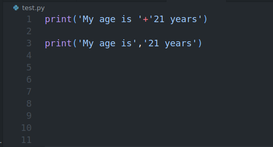
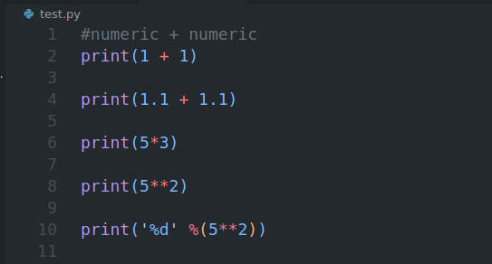
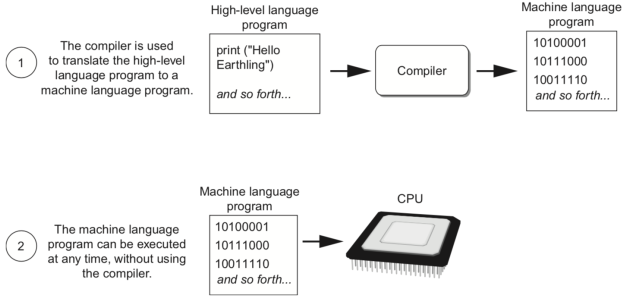
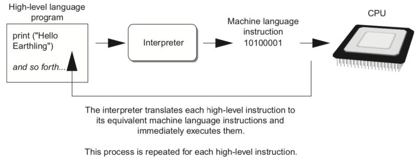

What programmer?
programmer : a person who writes Computer programs.
"The single most important skill for a computer scientist is
problem-solving."
Why python?
Because python is very popular among programmers.
The language is easy to understand and not complicated.
Python features
- Uses an elegant syntax, making the programs you write easier to read.
- Python's automatic memory management frees you from having to manually allocate and free memory in your code.
- The language supports raising and catching exceptions, resulting in cleaner error handling.
- Runs anywhere, including Mac OS X, Windows, Linux, and Unix, with unofficial builds also available
for Android and iOS.
Python ubiquity
Python is everywhere and is used by many companies, including Google, Yahoo!, and NASA.
- Scientific (ScyPy, Numpy)
Python editions
- IronPython :Python for .NET
- Jython :Java python able to blen with java
- PyPy :Compile python the fastest
Try to print hello world!


Try to print your name!


How to print numeric


How to print string + numeric


Next,How to print string + string


Finally,How to print numeric + numeric


Finish! Thx :)
Next lecture we'll learn about DataType Variable and Expression.
-
Computer AND PROGRAM
The physical devices that a computer is made of are referred to as the computer's
hardware. The programs that run on a computer are referred to as software.
Computers can do such a wide variety of things because they can be
programmed. This means that computers are not designed to do just one job, but
to do any job that their programs tell them to do. A program is a set of instructions
that a computer follows to perform a task.
-
HOW COMPUTER STORE DATA
All data stored on storage media – whether that’s hard disk drives (HDDs), solid state drives (SSDs),
external hard drives, USB flash drives, SD cards etc – can be converted to a string of bits, otherwise known as binary digits. These binary digits have a value of 1 or 0, and the strings can make up photos,
documents, audio and video. A byte is the most common unit of storage and is equal to 8 bits.


For example, if we want to store char ‘A’ in computer, the corresponding ASCII value will be stored in computer.
ASCII value for capital A is 65.
To store character value, computer will allocate 1 byte (8 bit) memory.
65 will converted into binary form which is (1000001) 2. Because computer knows only binary number system.
Then 1000001 will be stored in 8-bit memory.

What's Assembly Language?
-
Each personal computer has a microprocessor that manages the computer's arithmetical, logical, and control activities.
Each family of processors has its own set of instructions for handling various operations such as getting input from keyboard, displaying information on screen and performing various other jobs. These set of instructions are called 'machine language instructions'.
A processor understands only machine language instructions, which are strings of 1's and 0's. However, machine language is too obscure and complex for using in software development. So, the low-level assembly language is designed for a specific family of processors that represents various instructions in symbolic code and a more understandable form.
-


HIGH LEVEL LANGUAGE
In the 1950s, a new generation of programming languages known as high-level
languages began to appear. A high-level language allows you to create powerful
and complex programs without knowing how the CPU works
ADVANTAGES OF HIGH-LEVEL LANGUAGES
The main advantage of high-level languages over low-level languages is that they are easier to read, write, and maintain. Ultimately, programs written in a high-level language must be translated into machine language by a compiler or interpreter.
The first high-level programming languages were designed in the 1950s. Now there are dozens of different languages, including Ada, Algol, BASIC, COBOL, C, C++, FORTRAN, LISP, Pascal, and Prolog.
PROGRAMMING LANGUAGES

COMPILER

INTERPERTER

-
5,120 Etiam
-
8,192 Magna
-
2,048 Tempus
-
4,096 Aliquam
-
1,024 Nullam
Nam elementum nisl et mi a commodo porttitor. Morbi sit amet nisl eu arcu faucibus hendrerit vel a risus. Nam a orci mi, elementum ac arcu sit amet, fermentum pellentesque et purus. Integer maximus varius lorem, sed convallis diam accumsan sed. Etiam porttitor placerat sapien, sed eleifend a enim pulvinar faucibus semper quis ut arcu. Ut non nisl a mollis est efficitur vestibulum. Integer eget purus nec nulla mattis et accumsan ut magna libero. Morbi auctor iaculis porttitor. Sed ut magna ac risus et hendrerit scelerisque. Praesent eleifend lacus in lectus aliquam porta. Cras eu ornare dui curabitur lacinia.
-
5,120 Etiam
-
8,192 Magna
-
2,048 Tempus
-
4,096 Aliquam
-
1,024 Nullam
Nam elementum nisl et mi a commodo porttitor. Morbi sit amet nisl eu arcu faucibus hendrerit vel a risus. Nam a orci mi, elementum ac arcu sit amet, fermentum pellentesque et purus. Integer maximus varius lorem, sed convallis diam accumsan sed. Etiam porttitor placerat sapien, sed eleifend a enim pulvinar faucibus semper quis ut arcu. Ut non nisl a mollis est efficitur vestibulum. Integer eget purus nec nulla mattis et accumsan ut magna libero. Morbi auctor iaculis porttitor. Sed ut magna ac risus et hendrerit scelerisque. Praesent eleifend lacus in lectus aliquam porta. Cras eu ornare dui curabitur lacinia.